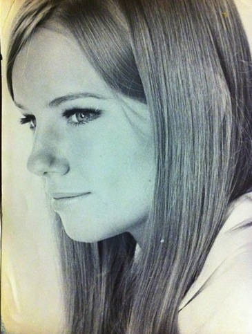
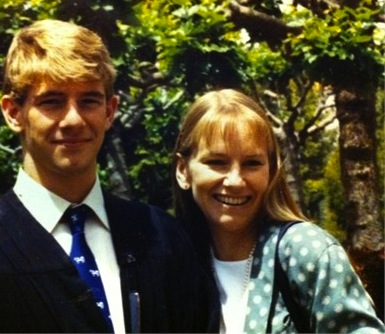
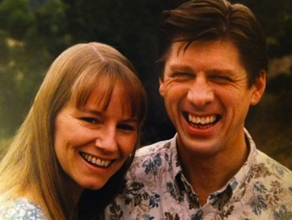
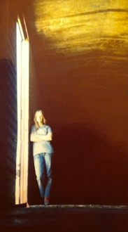

Virginia Lee Toombs Scholarship

|
The scholarship was created in 2000 in honor of Virginia Lee "Ginny" Toombs, a 1982 graduate of the UC Davis
School of Medicine, to assist UC Davis medical students who are single mothers with financial need.
The primary purpose of the fund is to help cover the cost of fees and tuition. While attending medical school, Toombs raised her young son as a single mother. She took pride in the dual achievement of becoming a medical doctor and raising her son, Cameron, to be a fine young man. Ginny died suddenly while vacationing with friends in Yosemite National Park on August 11, 2000.
To contribute to the fund, please send a check made out to: |
||||
 Dr. Virginia Lee "Ginny" Toombs - Born in Ridgewood, New Jersey, 1949 During her 51 years, Ginny Toombs lit up the world. In her many roles as mother, daughter, sister, physician, humanitarian, artist, entrepreneur, and surrogate sister and aunt to many lucky friends of all ages, she enriched the lives of all who knew her. She achieved early success as a model, appearing in Vogue magazine when she was just 17, but she had a greater ambition than modeling. She wanted to be a doctor, like her father, despite pressures to pursue a more traditional career.  Like many woman of her era she married young, giving birth to a son, Cameron, in 1968, when she was just 19. Shortly after moving to San Francisco with her family, she and her husband divorced. As a single mother, her chances of becoming a doctor seemed even more remote - but only briefly. Determined to follow her dream, she enrolled in San Francisco State University. After graduating summa cum laude in 1978, she entered medical school at UC Davis. She completed her residency in radiology the same week her son Cameron graduated from high school. Never again would anyone tell Ginny what she could not do.  In 1991, mutual friends introduced her to Jim Beran, whom she married in 1994. For several years, they lived in England and traveled widely, including trips to India, Turkey and Eastern Europe. In 1997 they returned to the States so that Ginny could complete a prestigious fellowship in radiology at the University of Washington. Afterwards, she accepted a position as medical director of the Silicon Valley Breast Imaging Center in Los Gatos, the capstone of her career.  Ginny's talents and interests were not limited to medicine. Over the years, she built homes for Habitat for Humanity in India, rode freight trains across the U.S., started a small business selling glow in the dark lampshades which she patented, was a loyal supporter of the Girl Scouts, and gained fame for her elaborate gingerbread houses which she sold to raise money for charities during the Christmas holidays. Ginny died suddenly while vacationing with friends in Yosemite National Park on August 11, 2000. http://womensbuilding.org/content/index.php/virginia-lee-toombs |
|||||